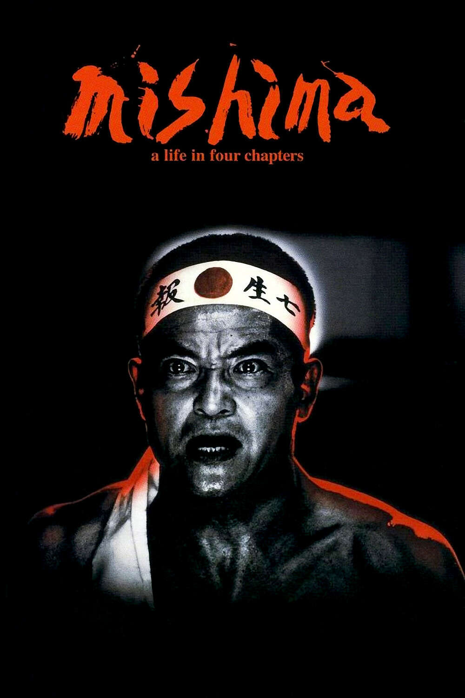
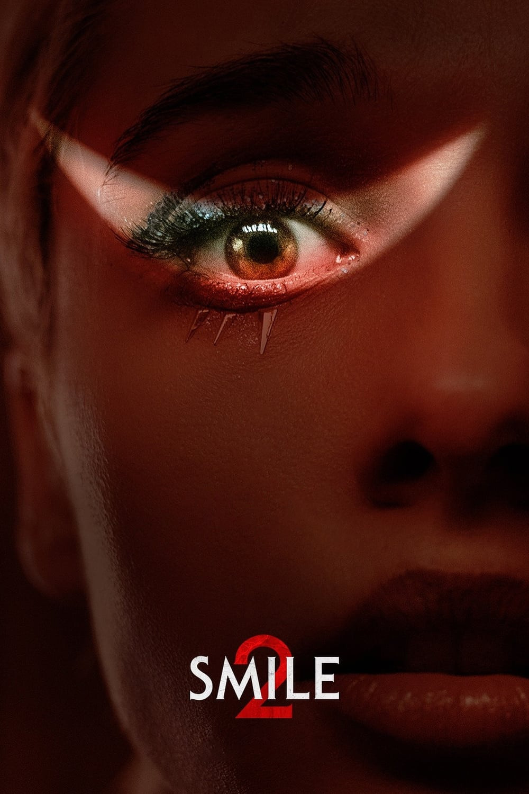
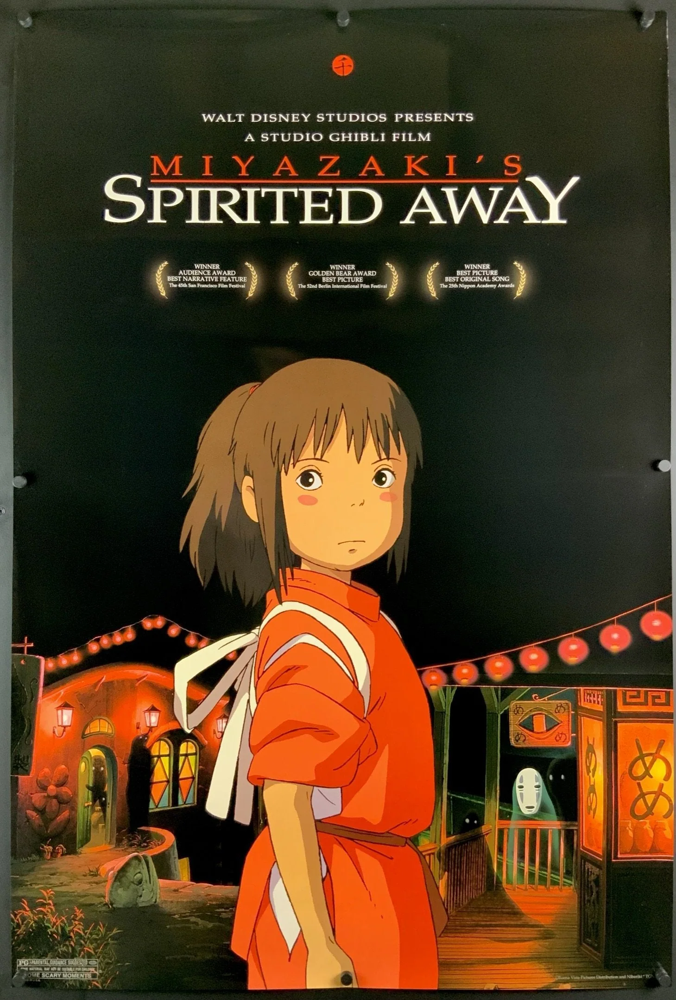
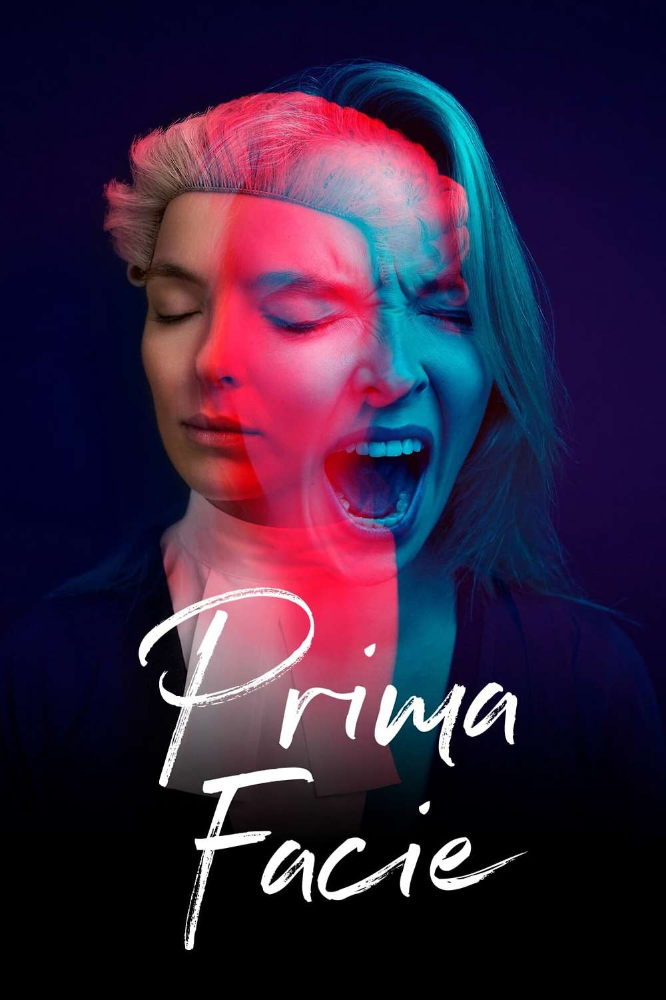
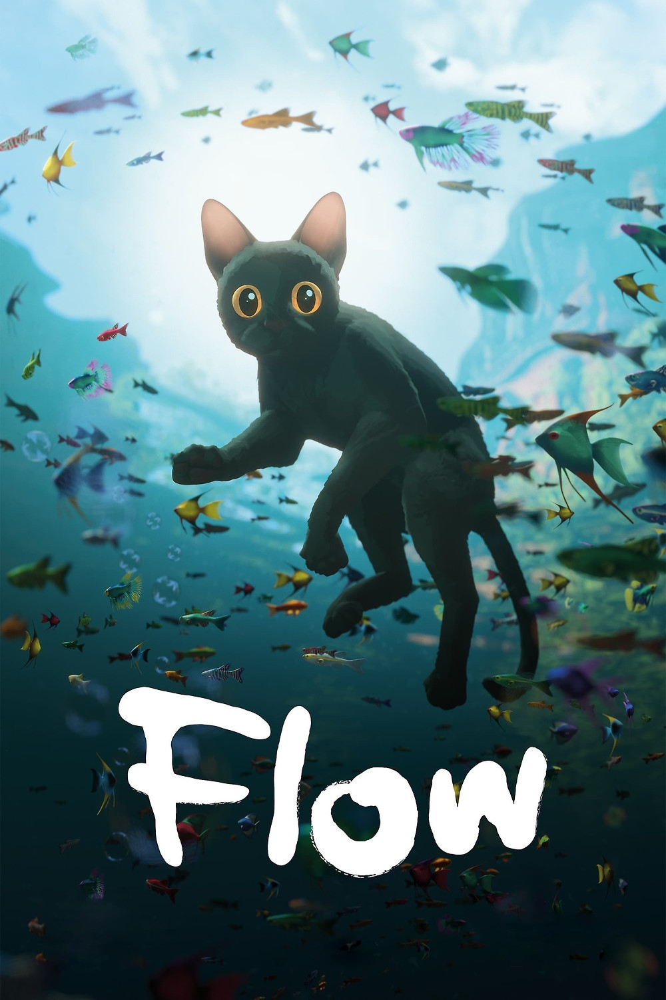
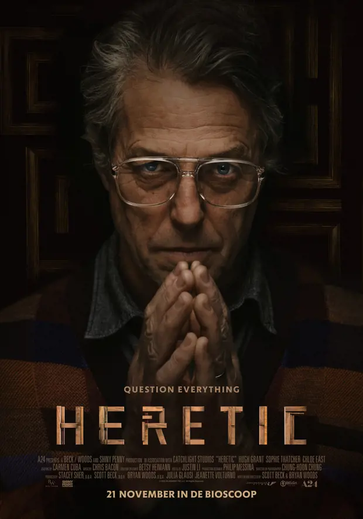

<div class="container">
    

    <table id="example" class="table  table-dark table-striped" style="width:100%">
        <thead>
          <tr>
            <th>Póster</th>
            <th>Título</th>
            <th>Director</th>
            <th>Género</th>
            <th>Año</th>
            <th>Duración</th>
            <th>Calificación</th>
          </tr>
        </thead>
        <tbody>
          <tr>
            <td>
              
            </td>
            <td>Mishima: Una vida en cuatro capítulos</td>
            <td>Paul Schrader</td>
            <td>Drama</td>
            <td>1985</td>
            <td>120 min</td>
            <td>8.0</td>
          </tr>
          <tr>
            <td>
              
            </td>
            <td>Smile</td>
            <td>Parker Finn</td>
            <td>Terror</td>
            <td>2022</td>
            <td>115 min</td>
            <td>6.8</td>
          </tr>
          <tr>
            <td>
              
            </td>
            <td>Shi</td>
            <td>Lee Chang-dong</td>
            <td>Drama</td>
            <td>2010</td>
            <td>139 min</td>
            <td>7.8</td>
          </tr>
          <tr>
            <td>
              
            </td>
            <td>La leyenda del tesoro perdido</td>
            <td>Jon Turteltaub</td>
            <td>Aventura</td>
            <td>2004</td>
            <td>131 min</td>
            <td>6.9</td>
          </tr>
          <tr>
            <td>
              
            </td>
            <td>Look</td>
            <td>Adam Rifkin</td>
            <td>Drama</td>
            <td>2007</td>
            <td>102 min</td>
            <td>7.1</td>
          </tr>
          <tr>
            <td>
              
            </td>
            <td>Flow</td>
            <td>Vlad Yudin</td>
            <td>Documental</td>
            <td>2008</td>
            <td>84 min</td>
            <td>7.6</td>
          </tr>
          <tr>
            <td>
              
            </td>
            <td>El Hereje</td>
            <td>John Boorman</td>
            <td>Terror</td>
            <td>1977</td>
            <td>118 min</td>
            <td>3.8</td>
          </tr>
        </tbody>
        <tfoot>
          <tr>
            <th>Póster</th>
            <th>Título</th>
            <th>Director</th>
            <th>Género</th>
            <th>Año</th>
            <th>Duración</th>
            <th>Calificación</th>
          </tr>
        </tfoot>
      </table>
      
      


</div>


